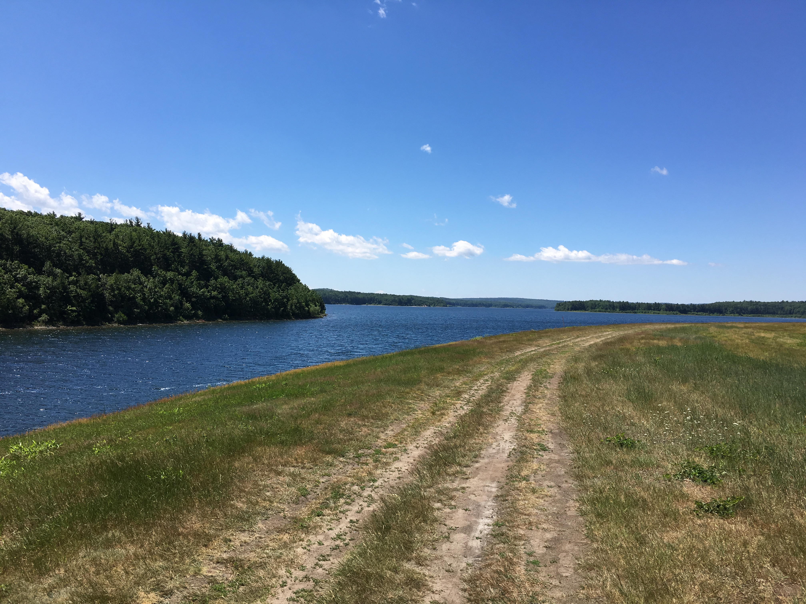
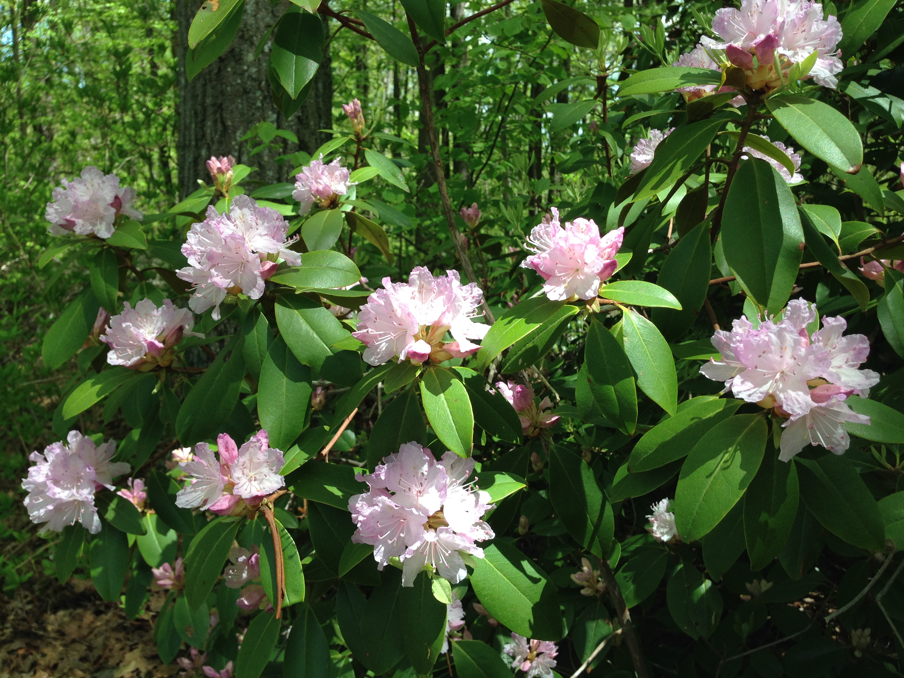
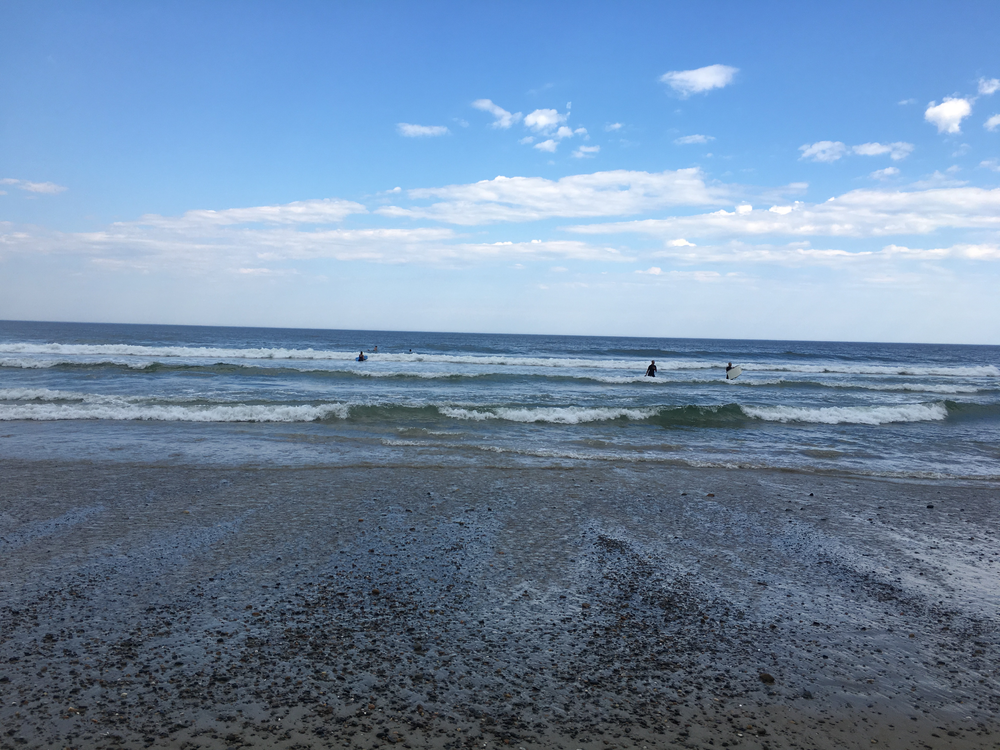
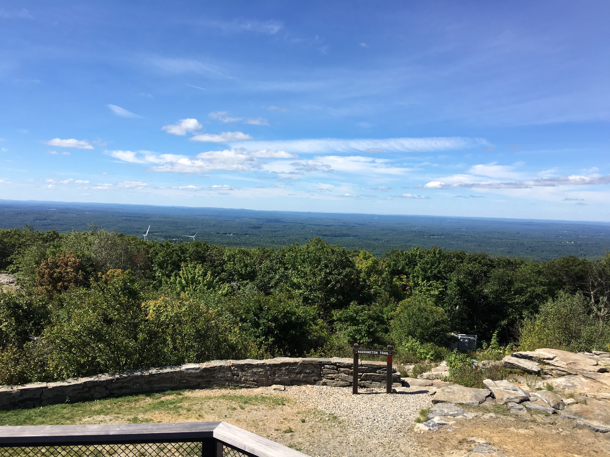
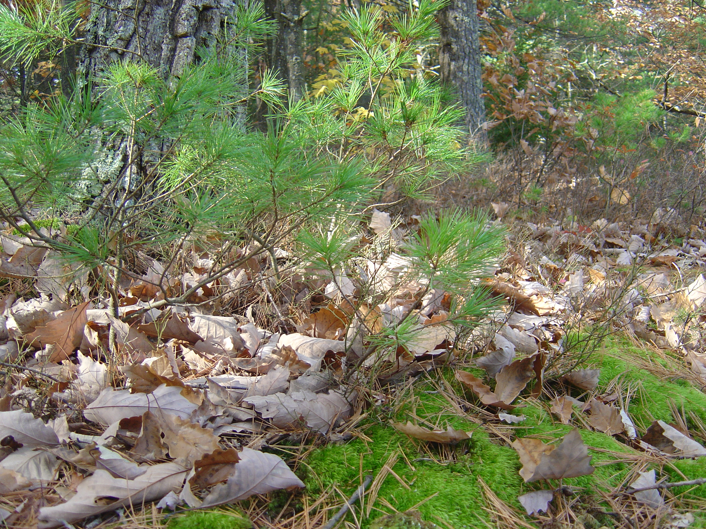
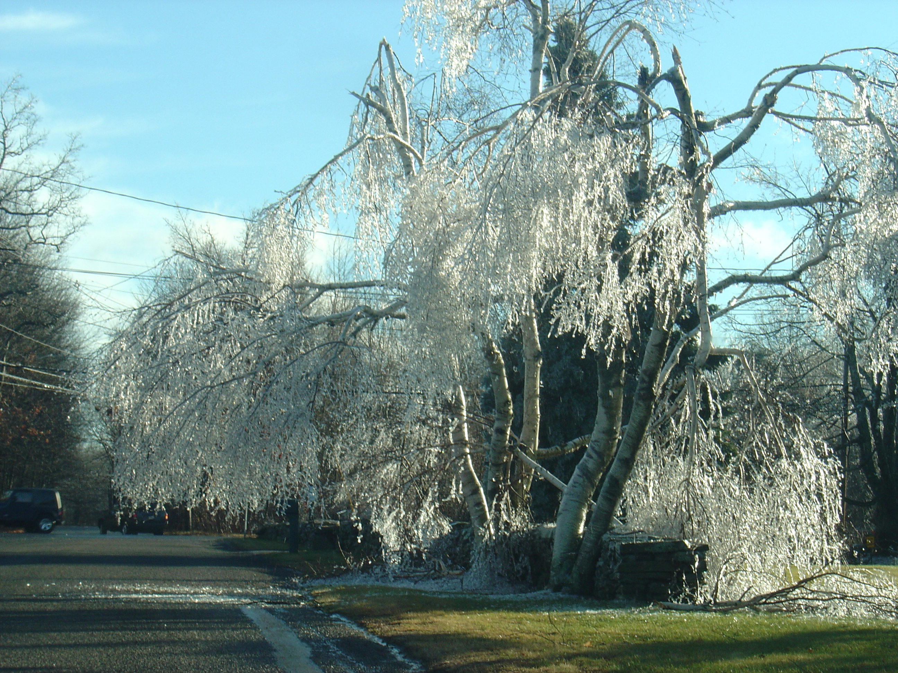

Jason's Nature Album
I've always loved being outside and seeing beautiful scenery. Here are some photos I've taken over the years. I hope you enjoy them!

This is a trail along the Wachusett Reservoir in West Boylston, MA.

This is a Rhododendron bush at Moore State Park in Paxton, MA.

This is a river at the park at West Hill Dam in Uxbridge, MA.

This is low tide at Wells Beach in Wells, in the southern part of Maine.

Here are some hay bales in a field at Moore State Park in Paxton, MA.

This is the view from the top of Mount Wachusett in Princeton, MA.

This is a tree in the woods on Mount Wachusett in Princeton, MA.

This is autumn in the woods, somewhere in New England.

A bad ice storm, sometime in December in Massachusetts